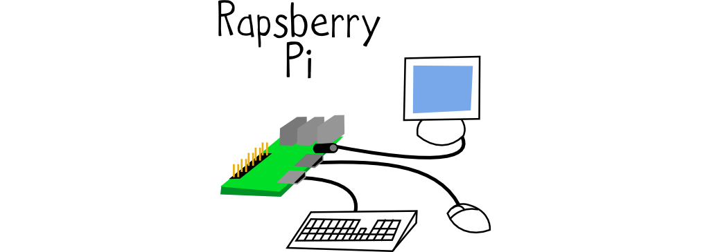

La stazione 3 mostra le grandi capacità creative dell’ambiente di programmazione Sonic Pi, un ambiente per ‘programmazione dal vivo’ (live coding, ovvero quando il confine tra programmazione e performance musicale dal vivo diventa sempre più sottile!)
Il tutto in esecuzione sul microcomputer RaspberryPi!